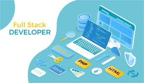

Le développeur full stack est un développeur touche-à-tout et complet, qui travaille à la fois côté Backend et Frontend. Par définition, être « full stack » signifie travailler sur « toute la stack ». Par extension, on peut dire que le développeur fullstack réalise ce que plusieurs développeurs front-end et back-end font en équipe.
